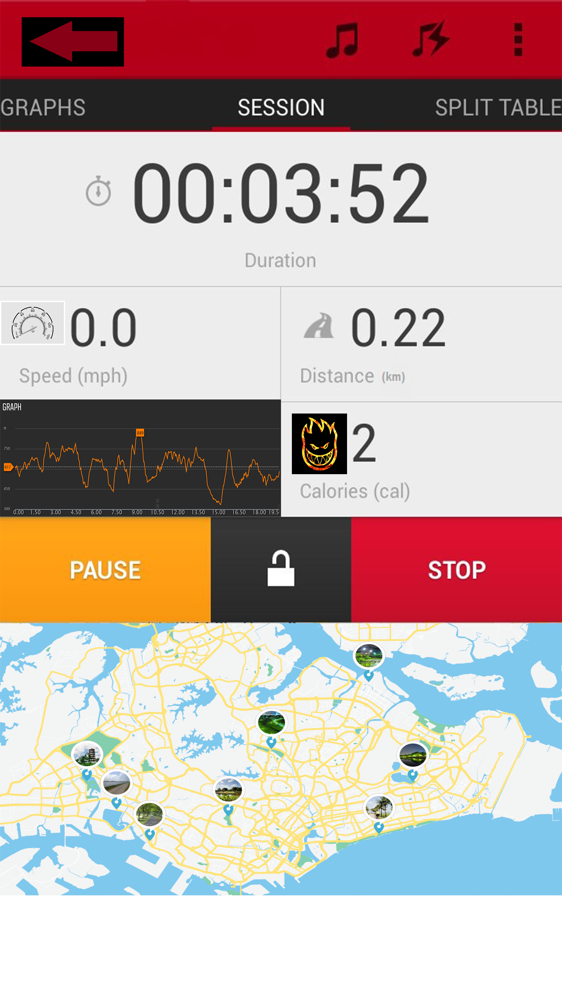

.png)
Have you ever thought of keeping fit but do not have the motivation to do so? Or perhaps You do not have friends willing to excerise with you? Well Fret not for QR runner is the app for you! QR Runner is a phone application dedicated to the elderly. With this application, it encourages the elderly to be more physically active. With the opportunities that the application provides, people would be more motivated to go outdoors and attain a certain goal to where they could earn interesting rewards from. Be it from points, vouchers or even merchendise, it provides many rewards and possibilites for the users.
To start things off, this applicaton brags about its user-friendly user interface that is accessible by everyone and anyone. It is made in way whereby it could easily be understood and navigated by anyone , no matter how "non-tech savy" they might be.
First things first, its Capabilities. The QR runner has many different capabilites that sets itself away from other applications in the market.
The Caloric Tracker allows users to calculate the amount of calories they have burned Throughout their workout session. This may seem like what any other app would would do. However , we took it up a knotch, whereby users are given information on how much more distance they have to cover in order to achieve their set goals of burned calories.

-ntuc-$10-voucher_27.jpg)

With this application, users are able to interact with their friends in the virtual world! This app gives users the opportunity to have a friendly competition with their fellow friends who uses the app. Points or as we call it FITBITS are gathered through the amount of distance travelled by foot or by inviting friends to the app. For every 100 steps taken, each player attains 1 FITBIT. Each FITBIT is added into their overall score and players are ranked based on their total score attained
Goodies Can be claimed at local Community Centres. Lots of prizes awaits! Such as NTUC vouchers, SportsLink Vouchers,Sports Apparels, Food vouchers, and many more!
With GPS, movements by the user is tracked in every step of the way. As such, points will only be given when the user is on walkways or park connectors.